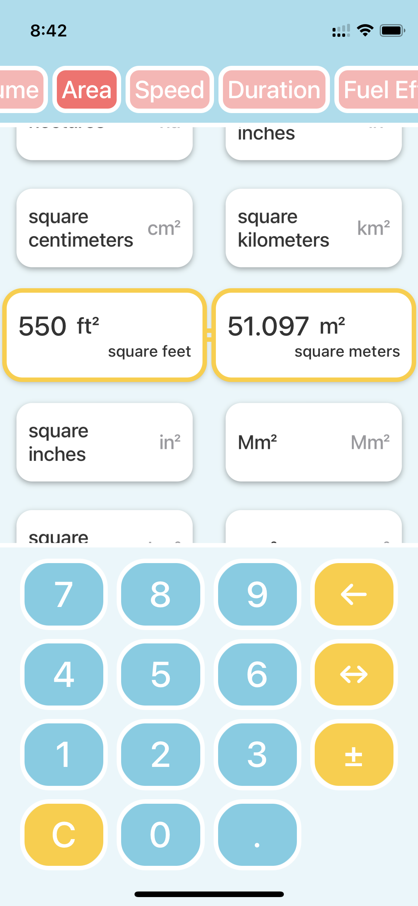

EasyUnit Converter
This is your ultimate unit conversion tool, designed to make converting between different units a breeze. With a user-friendly interface that combines unit selection and value input on a single screen, EasyUnit Converter ensures a seamless and efficient conversion experience. Whether you're a student, a professional, or someone who needs to convert measurements on the go, EasyUnit Converter has you covered.
Features
Comprehensive Unit Support: EasyUnit Converter supports a wide range of units for length, weight, volume, temperature, and more, allowing you to switch between different measurement systems effortlessly.
Streamlined Interface: Our intuitive interface lets you select your desired units and input values on ONE screen, making conversions quick and hassle-free.
Ad-Free Experience: Enjoy the convenience of EasyUnit Converter without any distracting advertisements, ensuring a smooth and uninterrupted conversion process.
Free to Use: EasyUnit Converter is FREE to download and use, providing a powerful unit converter tool at no cost.
iOS 16 Compatibility: EasyUnit Converter is compatible with iOS 16 and later versions, ensuring you can access accurate conversions on the latest devices.
We're here to make your life easier. Have any feedback or suggestions? Feel free to reach out to us. Your input helps us improve the app for you.
 
 easyunitconverterhelp@gmail.com
easyunitconverterhelp@gmail.com